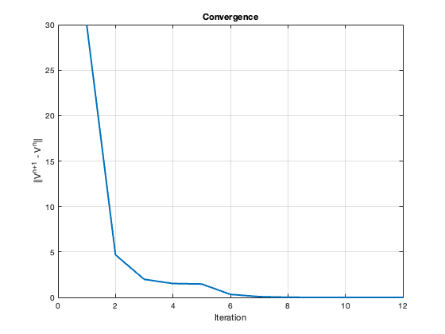
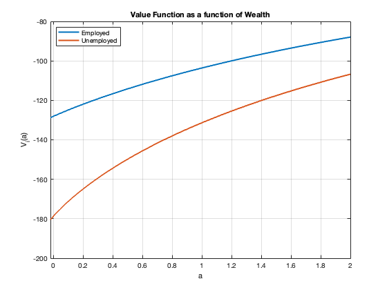
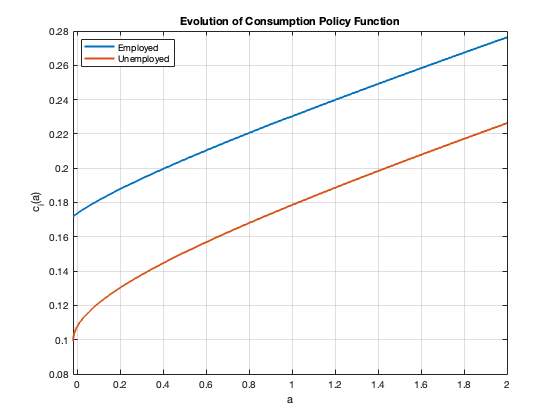
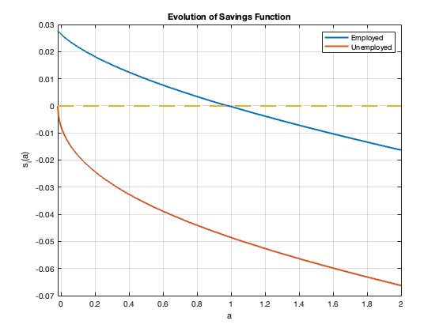
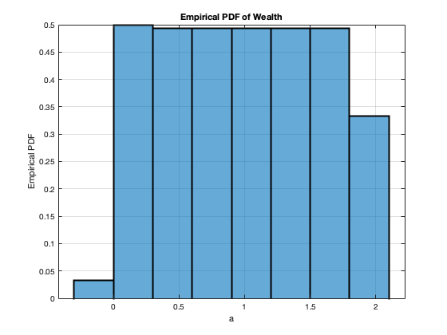
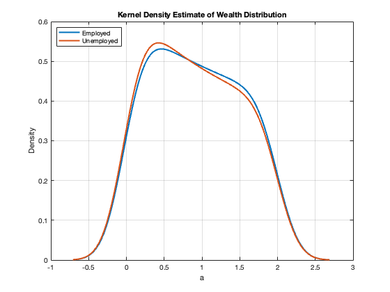
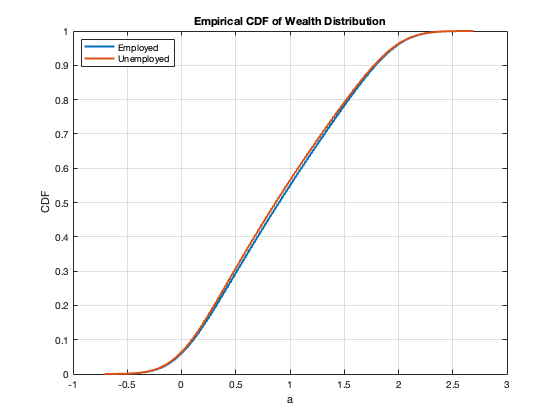

Contents
clear all;
close all;
clc;
clear all;
close all;
clc;
1. DEFINE PARAMETERS
p = define_parameters_Hugget();
2. INITIALIZE GRID POINTS
a_min = p.a_min;
a_max = p.a_max;
a = linspace(a_min, a_max, p.I)';
da = (a_max - a_min)/(p.I-1);
aa = [a,a];
zz = ones(p.I,1)*p.z;
Aswitch = [-speye(p.I)*p.la(1),speye(p.I)*p.la(1);speye(p.I)*p.la(2),-speye(p.I)*p.la(2)];
3. PRE-ITERATION INITIALIZATION
Df = zeros(p.I, p.I);
for i = 1:p.I-1
Df(i,i) = -1/da; Df(i,i+1) = 1/da;
end
Df = sparse(Df);
Db = zeros(p.I, p.I);
for i = 2:p.I
Db(i,i-1) = -1/da; Db(i,i) = 1/da;
end
Db = sparse(Db);
v0(:,1) = p.u(p.z(1)+p.r.*a)/p.rho;
v0(:,2) = p.u(p.z(2)+p.r.*a)/p.rho;
v = v0;
dVf = zeros(p.I,2);
dVb = zeros(p.I,2);
c = zeros(p.I,2);
4. VALUE FUNCTION ITERATION
tic;
for n = 1:p.maxit
V= v;
dVf(:,1) = Df*V(:,1);
dVb(:,1) = Db*V(:,1);
dVf(:,2) = Df*V(:,2);
dVb(:,2) = Db*V(:,2);
dVf(end,:) = p.mu(p.z+p.r.*a_max);
dVb(1,:) = p.mu(p.z+p.r.*a_min);
cf = p.inv_mu(dVf);
cb = p.inv_mu(dVb);
sf = zz +p.r.*aa - cf;
sb = zz +p.r.*aa - cb;
If = sf>0;
Ib = sb<0;
I0 = 1-If-Ib;
dV0 = p.mu(zz+p.r.*a);
dV_upwind = dVf.*If + dVb.*Ib + dV0.*I0;
c = p.inv_mu(dV_upwind);
u = p.u(c);
X = - min(sb,0)/da;
Y = - max(sf,0)/da + min(sb,0)/da;
Z = max(sf,0)/da;
A1=spdiags(Y(:,1),0,p.I,p.I)+spdiags(X(2:p.I,1),-1,p.I,p.I)+spdiags([0;Z(1:p.I-1,1)],1,p.I,p.I);
A2=spdiags(Y(:,2),0,p.I,p.I)+spdiags(X(2:p.I,2),-1,p.I,p.I)+spdiags([0;Z(1:p.I-1,2)],1,p.I,p.I);
A = [A1,sparse(p.I,p.I);sparse(p.I,p.I),A2] + Aswitch;
B = (p.rho + 1/p.Delta)*speye(2*p.I) - A;
u_stacked = [u(:,1);u(:,2)];
V_stacked = [V(:,1);V(:,2)];
b = u_stacked + V_stacked/p.Delta;
V_stacked = B\b;
V = [V_stacked(1:p.I),V_stacked(p.I+1:2*p.I)];
Vchange = V - v;
v = V;
dist(n) = max(max(abs(Vchange)));
if dist(n)<p.tol
disp('Value Function Converged, Iteration = ')
disp(n)
break
end
end
toc;
Value Function Converged, Iteration =
12
Elapsed time is 0.024695 seconds.
5. Graphs
figure
set(gca,'FontSize',14)
plot(dist,'LineWidth',2)
grid
xlabel('Iteration')
ylabel('||V^{n+1} - V^n||')
title('Convergence')
adot = zz + p.r.*aa - c;
figure
set(gca,'FontSize',12)
plot(a,V,'LineWidth',2)
grid
xlabel('a')
ylabel('V_i(a)')
xlim([p.a_min p.a_max])
legend('Employed','Unemployed', 'Location', 'northwest')
title('Value Function as a function of Wealth')
figure
set(gca,'FontSize',14)
plot(a,c,'LineWidth',2)
grid
xlabel('a')
ylabel('c_i(a)')
xlim([p.a_min p.a_max])
legend('Employed','Unemployed', 'Location', 'northwest')
title('Evolution of Consumption Policy Function')
figure
set(gca,'FontSize',14)
plot(a,adot,a,zeros(1,p.I),'--','LineWidth',2)
grid
xlabel('a')
ylabel('s_i(a)')
xlim([p.a_min p.a_max])
legend('Employed','Unemployed', 'Location', 'northeast')
title('Evolution of Savings Function')
figure
set(gca,'FontSize',14)
histogram(a, 'Normalization', 'pdf', 'LineWidth', 2)
grid
xlabel('a')
ylabel('Empirical PDF')
title('Empirical PDF of Wealth')
figure
set(gca,'FontSize',14)
[f_employed, xi_employed] = ksdensity(a, 'Weights', V(:,1));
[f_unemployed, xi_unemployed] = ksdensity(a, 'Weights', V(:,2));
plot(xi_employed, f_employed, 'LineWidth', 2)
hold on
plot(xi_unemployed, f_unemployed, 'LineWidth', 2)
grid
xlabel('a')
ylabel('Density')
legend('Employed', 'Unemployed', 'Location', 'northwest')
title('Kernel Density Estimate of Wealth Distribution')
figure
set(gca,'FontSize',14)
[f_employed, xi_employed] = ksdensity(a, 'Weights', V(:,1), 'Function', 'cdf');
[f_unemployed, xi_unemployed] = ksdensity(a, 'Weights', V(:,2), 'Function', 'cdf');
plot(xi_employed, f_employed, 'LineWidth', 2)
hold on
plot(xi_unemployed, f_unemployed, 'LineWidth', 2)
grid
xlabel('a')
ylabel('CDF')
legend('Employed', 'Unemployed', 'Location', 'northwest')
title('Empirical CDF of Wealth Distribution')
      